Home / Past papers / MLF Quiz 1 / this paper
IIT M DIPLOMA AN2 EXAM QDD2 25 Feb 2024 - 25 Feb 2024
Elapsed 00:00
Comprehension passage - the questions below it refer to this

Find the row space of matrix A.


Find the column space of matrix A.


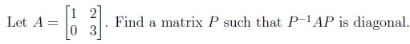
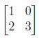
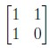
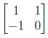
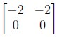
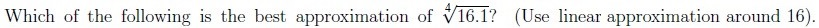
- 2.1
- 2.003125
- 2.031
- 1.9968
Find the best fit line for the dataset given below using least squares method.
 Find the best fit line for the dataset given below using least squares method.
Find the best fit line for the dataset given below using least squares method.
Find the best fit line for the dataset given below using least squares method. 


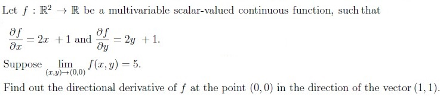
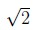
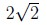
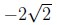
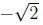
Which of the following is/are supervised learning task(s)?
- Predicting future sales of a product based on the past sales data.
- Reducing the dimensionality of images while retaining essential features,enabling efficient storage and transmission.
- Recognizing and interpreting handwritten characters or words, often used indigit recognition or reading handwritten text.
- Categorizing text documents into predefined classes, such as spam or non-spam emails.

- Eigenvalues of A are 1, 2, and 3.
- Eigenvalues of A are 1, 2, and 2.
- Eigenvalues of B are 2, 20, and 78.
- Matrix B is diagonalizable.
Let A and B be symmetric matrices such that AB = BA. Then which of the following options is/are true?
- AB is a symmetric matrix.
- AB is orthogonally diagonalizable.
- BA has real eigenvalues.
- AB is not a symmetric matrix.
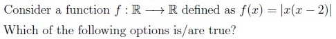
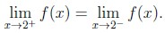
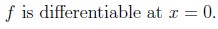
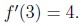
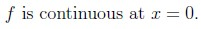
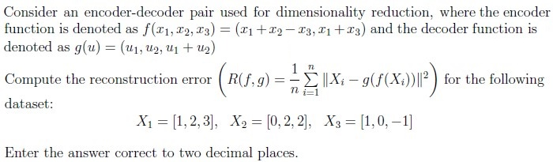
Concepts this paper tests
Auto-generated summary from the source site. Handy as a checklist; the lessons above explain each idea from scratch.
Summary of Core Topics, Concepts, Principles, and Equations
1. Linear Algebra
- Matrix Operations: Inverse, multiplication, diagonalization.
- Vector Spaces: Row space, column space, span.
- Eigenvalues and Eigenvectors: Calculation and properties.
- Diagonalization: Finding matrix such that is diagonal.
Equations:
- , (diagonal matrix)
- Row space and column space:
2. Calculus
- Linear Approximation: Approximating function values using derivatives.
- Multivariable Calculus: Partial derivatives, directional derivatives.
- Limits and Continuity: Evaluating limits and checking continuity.
Equations:
- Linear approximation:
- Directional derivative:
3. Machine Learning
- Supervised Learning: Tasks like prediction, classification.
- Dimensionality Reduction: Techniques like PCA, encoders, and decoders.
- Least Squares Method: Finding the best fit line.
Equations:
- Least squares method:
- Reconstruction error:
4. Differential Equations and Functions
- Differentiability and Continuity: Checking differentiability and continuity of functions.
- Second Derivatives: Calculating and interpreting second derivatives.
Equations:
- Differentiability:
- Continuity: